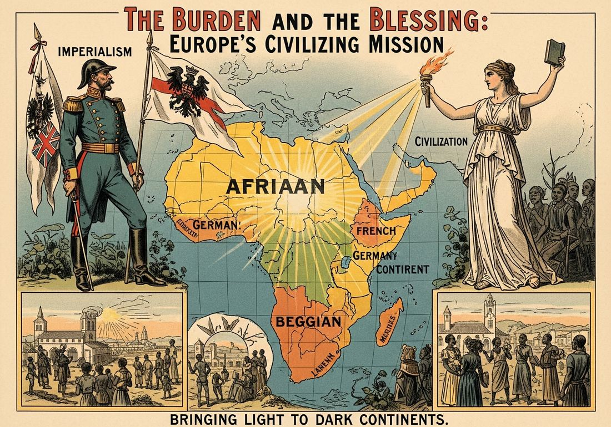

6.1 Rationales for Imperialism from 1750 to 1900
- LO-A: Social Darwinism — pseudo-science of empire — Herbert Spencer misapplied Darwin’s evolution to human societies, arguing that “survior of the fittest” proved “superior” races were naturally destined to dominate “inferior” ones. This gave imperialism the appearance of biological law — not conquest, but destiny. Know it as KC-5.2.III. The Civilizing Mission — racism dressed as charity — Europeans claimed colonialism was justified by the duty to bring education, Christianity, and “civilization” to peoples they considered primitive. Rudyard Kipling’s “White Man’s Burden” (1899) captured the paternalistic logic. In practice it meant cultural destruction, forced labor, and extraction disguised as uplift. Nationalism and competition — colonies as scorecards — European powers competed for prestige and strategic advantage. Colonies signaled national greatness. Missing out meant falling behind rivals. The Berlin Conference (1884–85) reflected this competitive logic: nations claimed territory not always because they valued it, but because they feared someone else would take it first. Religious conversion — missionary zeal — Christian missionaries saw empire as the vehicle for spreading the Gospel. Their genuine religious conviction gave imperialism moral cover, while church schools and hospitals built institutional infrastructure that colonial governments later used for their own purposes.
Try each question before revealing the answer.
1. Herbert Spencer coined “survival of the fittest” in 1864 to describe market competition, before it was applied to races and nations. Why might powerful industrial nations have found this idea particularly appealing in the late 19th century?
2. Rudyard Kipling wrote “The White Man’s Burden” in 1899 specifically as the United States was debating whether to annex the Philippines after the Spanish-American War. What argument does the poem make, and how does it reveal the ideology behind it?
3. Between 1880 and 1914, European powers colonized nearly all of Africa despite most African territories having limited immediate economic value. What does this suggest about the relationship between economics and ideology in driving imperial expansion?
4. Christian missionaries built schools and hospitals in colonized regions. A critic argues these were tools of cultural imperialism; a defender argues they were genuine acts of charity. How might both be right at the same time?
5. How did European nationalism and Social Darwinism reinforce each other in justifying imperialism?
- Explain how ideologies contributed to the development of imperialism from 1750 to 1900
Tap a term for its definition.
-
Definition: The policy of extending a nation’s power through military conquest, economic control, or political domination over other territories. Significance: Describes the 19th-century wave of European, American, and Japanese expansion that by 1914 left most of the world under some form of foreign control.
-
Definition: The misapplication of Darwin’s evolutionary theory to human societies, arguing that “stronger” races and nations are naturally destined to dominate “weaker” ones. Significance: Provided pseudo-scientific justification for racial hierarchy and imperial conquest; associated with Herbert Spencer and the phrase “survival of the fittest.”
-
Definition: The ideology that European colonialism was morally justified by the goal of bringing Western education, Christianity, and “civilization” to non-European peoples. Significance: Framed conquest as charity; disguised economic extraction and political control behind paternalistic language of improvement and uplift.
-
Definition: Phrase from Rudyard Kipling’s 1899 poem arguing that white Europeans had a racial duty to govern and “uplift” non-white peoples. Significance: Became a shorthand for the paternalistic racism underlying the civilizing mission; written specifically to encourage the U.S. to colonize the Philippines.
-
Definition: Intense pride in and loyalty to one’s nation; belief that nations should be sovereign and compete for power and prestige. Significance: Fueled European competition for colonies as markers of national greatness; nations feared being left behind if rivals acquired more territory.
-
Definition: The ideological belief that human races can be ranked from superior to inferior based on alleged biological differences. Significance: Provided the pseudoscientific foundation for Social Darwinism and the civilizing mission; used to argue that European domination of non-European peoples was both natural and beneficial.
-
Definition: A colony where large numbers of colonizers permanently relocate and displace indigenous populations (e.g., New Zealand, Australia, South Africa, the Americas). Significance: Distinguished from exploitation colonies; settler colonialism involved land seizure, indigenous displacement, and permanent demographic transformation of colonized territories.
-
Definition: The rapid partition of almost all of Africa by European powers between approximately 1880 and 1914, formalized at the Berlin Conference (1884–85). Significance: By 1914 only Ethiopia and Liberia remained independent; demonstrates how ideological justifications enabled rapid territorial seizure regardless of African peoples’ wishes or existing political structures.
🌎 The Age of Imperialism: What It Was and Why It Happened
Between roughly 1750 and 1900, European nations — joined eventually by the United States and Japan — expanded their control over most of the world. By 1914, Europe and its former colonies controlled approximately 84% of the earth’s land surface. This process is called imperialism: the extension of one nation’s power over other territories through military, economic, or political domination.
What made the 19th century’s wave of imperialism different from earlier periods of conquest? Two things: scale and ideology. The scale was unprecedented — railroads, steamships, and industrial weapons gave European powers a military advantage they had never previously enjoyed. But the ideology was equally important. To sustain public support for empire, European governments needed to convince their own citizens — and themselves — that conquest was not just profitable but right. That’s where the ideological justifications came in. Four major ideologies drove the development of imperialism: Social Darwinism, the civilizing mission, nationalism, and religious conversion. The AP exam requires you to know all four.
🧬 Social Darwinism: When Science Becomes Ideology
In 1859, Charles Darwin published On the Origin of Species, arguing that species evolve through natural selection: organisms better adapted to their environment survive and reproduce at higher rates than less-adapted ones. Darwin was describing biology. But within a decade, others had applied his ideas to human societies — a move Darwin himself largely rejected.
Herbert Spencer, a British philosopher, coined the phrase “survival of the fittest” in 1864 to describe economic competition. By the 1880s, thinkers across Europe and America were applying evolutionary language to race and empire: some races were “fitter” than others; the dominance of European civilization over “lower races” was simply nature at work. This ideology is called Social Darwinism.
The appeal of Social Darwinism to imperialists was obvious: it transformed conquest from a moral question into a scientific fact. If the “stronger” race naturally dominated the “weaker,” then colonialism wasn’t something Europeans were choosing — it was something nature was demanding. Resistance to imperialism, by this logic, was resistance to natural law itself.
Of course, Social Darwinism was scientific nonsense. Biological evolution has nothing to say about the moral worth or capacities of different human groups. The “superiority” of European technology in 1880 reflected centuries of specific geographical, economic, and historical advantages — not biological destiny. But in the late 19th century, Social Darwinism had the appearance of science, and that appearance was politically powerful.

European colonial ideology framed imperialism as the natural triumph of “superior” civilization over “primitive” peoples — Social Darwinism gave this racism the appearance of scientific fact (Google Gemini, 2025), commercially licensed. European colonial ideology framed imperialism as the natural triumph of “superior” civilization over “primitive” peoples — Social Darwinism gave this racism the appearance of scientific fact (Google Gemini, 2025), commercially licensed.
🏛️ The “Civilizing Mission”: Charity or Control?
The most widespread ideological justification for imperialism was what the French called the mission civilisatrice — the civilizing mission. The argument was straightforward: European civilization was more advanced than those of Africa, Asia, and the Pacific. Europeans therefore had a moral obligation to bring their civilization — their education systems, their legal codes, their technology, their Christianity — to “less developed” peoples.
The British poet Rudyard Kipling captured this ideology most memorably in his 1899 poem “The White Man’s Burden,” written to encourage the United States to colonize the Philippines after the Spanish-American War. The poem instructs white Europeans to:
“Take up the White Man’s burden — / Send forth the best ye breed — / Go bind your sons to exile / To serve your captives’ need.”
The framing is revealing: colonialism is a burden, not a benefit to the colonizer. The colonized are “captives” who “need” European governance. This paternalistic logic — we know what’s best for you, even if you resist — was the ideological heart of the civilizing mission.
In practice, the civilizing mission justified taking land, suppressing indigenous languages and religions, and imposing European legal systems — all in the name of “improvement.” It did not prevent horrific violence. Belgian king Leopold II cited the civilizing mission while overseeing a regime in the Congo that killed an estimated 10 million people.
🏁 Nationalism and the Race for Empire
Nationalism — the belief that nations are distinct, unified communities with legitimate claims to sovereignty and greatness — became one of the most powerful political forces of the 19th century. In the context of imperialism, nationalism turned colonial expansion into a matter of national honor and survival.
European powers were intensely aware of each other’s imperial acquisitions. When Britain annexed Egypt in 1882, France felt threatened. When Germany began building a colonial empire in the 1880s, Britain and France accelerated their own expansion to stay ahead. The result was a self-reinforcing competitive spiral: each new colony seized by one power motivated rivals to seize more. This dynamic drove the Scramble for Africa, during which European powers claimed territory so rapidly that they needed the Berlin Conference (1884–85) to negotiate who got what without going to war with each other.
Importantly, nationalism made empire appear necessary even when it wasn’t economically rational. Some colonies cost more to administer than they generated in profit. But the prestige of the empire — the sense that a great nation needed a great empire — made the calculation political rather than purely economic.
⛪ Religious Justifications: Missionaries and Empire
The fourth ideological pillar of imperialism was religious. Christian missionaries — Catholic and Protestant — believed they had a divine mandate to spread the Gospel to people who had never heard it. In their view, empire opened doors that would otherwise remain closed. Colonial governments provided security; missionaries provided schools and hospitals; both expanded European influence simultaneously.
The relationship between missionaries and colonial governments was complex. Some missionaries genuinely opposed colonial abuses — Bartolomé de las Casas had protested the Spanish treatment of indigenous Americans in the 16th century; later missionaries like David Livingstone drew attention to the East African slave trade. But even missionaries who criticized colonial violence rarely questioned the underlying assumption that Christianizing indigenous peoples was inherently beneficial.
The institutional legacy was also complex. Mission schools became some of the first formal educational institutions in many colonized regions. But they also taught European languages and values, discouraging indigenous ones — a form of cultural imperialism even when undertaken by people who genuinely believed they were helping.
Nothing added yet. To attach a Google NotebookLM audio overview, video overview, or infographic to this topic: open this file — build/data/content/ap-world-history/6-1.json — and add an entry to notebookLmResources with a title and a shareable link (or paste an embed <iframe> directly into this block in the generated HTML file if you're editing the page by hand instead).
- Social Darwinism, which argued that stronger nations would naturally dominate weaker ones
- Economic imperialism, which argued that colonies were necessary sources of raw materials
- Nationalism, which argued that great nations required large colonial empires to maintain their prestige
- The civilizing mission, which argued that Europeans had a duty to govern and uplift non-European peoples
- Nationalism
- Social Darwinism
- The civilizing mission
- Christian missionary ideology
- That economic profit was the primary driver of imperial expansion
- That the civilizing mission provided ideological justification for conquest
- That nationalism and prestige motivated imperial expansion
- That Social Darwinism convinced Europeans that expansion was natural
- The civilizing mission and religious conversion
- Economic imperialism and Social Darwinism
- Social Darwinism and nationalism
- Nationalism and the civilizing mission
- Persuade French citizens to emigrate to African territories as settler colonists
- Counter Social Darwinist arguments that justified British imperial expansion
- Respond to African resistance movements that challenged French colonial rule
- Build domestic political support for continued French colonial expansion in Africa
Answer parts A, B, and C. Each part requires a separate short response. Do not write a full essay.
Part A
Briefly describe ONE specific way Social Darwinism was used to justify European imperialism in the period 1750–1900.
Part B
Briefly explain ONE way the civilizing mission ideology differed from Social Darwinism as a justification for imperialism.
Part C
Briefly explain ONE way nationalism contributed to the pace and scope of European imperial expansion in the period 1880–1914.
Write a full essay with a thesis that makes a historically defensible claim. Use specific evidence from Unit 6 (and earlier units for contextualization). Apply causation as your historical reasoning skill. A strong response will acknowledge evidence on both sides and argue a qualified claim about the relative importance of ideology vs. economics.
📝 My Notes (edit this yourself — no AI needed)
This box is yours. Open this page's HTML file directly (in GitHub's editor or any text editor), find the <!-- MY-NOTES-START --> comment below, and type between the markers — corrections, extra context for this year's students, a link, anything. Changes show up as soon as you save and re-publish the file — nothing else on the page will change.
(Add your own notes, corrections, or extra context here.)